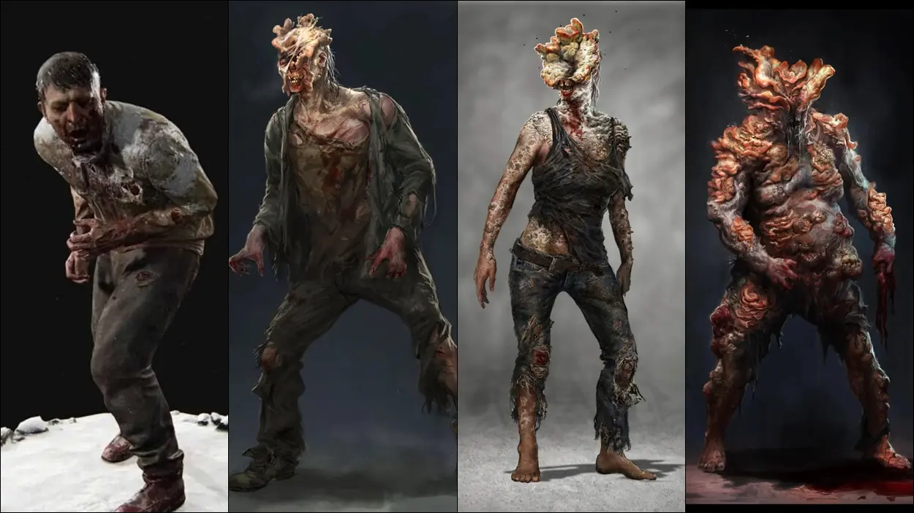

Primero que nada, debemos saber que es el Cordyceps
El Cordyceps es un hongo que se mete en el cerebro de un individuo y en el cual toma completa poseción y
control sobre el huesped
en el cual habita, manteniendolo vivo y muerto a la vez, pues mantiene al organismo vivo
para su propagación, pero muerto, ya que el organismo ya no esta
conciente ni sabe que sigue vivo, en otras palabras, es un zombie
Ahora, durante el juego, descubrimos que el Cordyceps está infectando humanos
esto si bien, no es posible, ya que el Cordyceps no puede sobrevivir a temperaturas mayores a 30°, siendo la
temperatura humana de 36-37°, en la reciente serie de HBO, The Last Of Us se nos dice
que debido a el calentamiento global, el Cordyceps se vio obligado a evolucionar para poder
sobrevivir a temperaturas mas altas, provocando que ahora sí, los humanos puedan contagiarse
Ahora, el Cordyceps tiene 4 fases (Conocidas hasta ahora) las cuales son:

1-Corredor
2-Acechador
3-Chasqueador
4-Gordinflón
Eso sin contar las variantes o bonus, es decir, estas son solo las basicas.
Corredores
Tiempo de infección: 1-2 Dias
Los infectados/Corredores son el resultado de un brote repentino de un hongo Cordyceps mutante que ahora
afecta a los
seres humanos en lugar de a los insectos. Según los informes, el hongo se originó en cultivos sudamericanos;
varios periódicos en Austin en 2013 respaldan esta afirmación. El hongo infecta el cerebro humano, hace
crecer el micelio dentro del tejido cerebral y mata las células del cerebro. Esto borra sus recuerdos y los
vuelve locos, modificando sus instintos para que no busquen otro objetivo que esparcir las esporas a los
demás. Eventualmente, el hongo mata a su huésped y luego crecerá fuera del cuerpo del huésped para esparcir
las esporas.
La reacción del público a los infectados ha sido catastrófica. Como el hongo vicioso se ha apoderado de la
mayoría de la población, la pandemia mundial provoca el colapso total y la destrucción de la sociedad a
través de la violencia generalizada; el fracaso de la ley marcial para contener el brote, los esfuerzos cada
vez más violentos del ejército de los Estados Unidos para censurar la información y la casi extinción de la
humanidad. Las luciérnagas, un grupo de milicianos formado en respuesta a la opresión militar, han llevado a
cabo una guerra en su mayoría inútil contra el gobierno apenas funcional. Creen que pueden crear una vacuna
a través del estudio del hongo y sus huéspedes, una de las últimas organizaciones en hacerlo.
La ley marcial ordena a aquellos que están libres de infección que residan dentro de una zona de cuarentena.
Los militares, bajo las órdenes de FEDRA, bombardearon áreas fuera de las zonas de cuarentena para matar a
los infectados y ejecutar a cualquier sospechoso de infección a la vista.
Acechadores
Tiempo de infección:De 1 semana a 1
mes
Los acechadores son la segunda etapa de la infección. Tienen la visión y la velocidad de los Corredores,
pero con la ferocidad de los Chasqueadores. Los rasgos físicos más notables que definen a los acechadores
son los distintos ruidos de graznidos que producen, a ellos les comienzan a crecer hongos alrededor de la
cabeza y la cara dejandolos con solo un ojo, el desarrollo de la pseudoecolocación y su discreción, le
permite detectar a una víctima a distancia. Ellos atacarán y se refugiarán, eventualmente acercándose a la
víctima, de ahí el nombre "Acechador". De cerca, los acechadores son muy agresivos y cargarán directamente
hasta la víctima. La etapa 2 puede tener lugar entre una semana y un mes después del inicio de la Etapa 1 y
dura un año y luego pasa a la Etapa 3.
Su fuerza es igual a la de un ser humano en forma, ya que sus ataques pueden interrumpir las acciones
realizadas por el jugador. A pesar de que su ataque de agarre puede ser sacudido, aun así tendrá como
resultado una muerte instantánea por la pérdida / infección de sangre si el acechador tiene éxito con el
ataque.
De acuerdo con el Panfleto militar coleccionable, el modus operandi de un acechador es "esconder y emboscar
a las víctimas". El coleccionable implora a los lectores que revisen su entorno, pero no se proporciona
ninguna otra información. Su graznido puede escucharse a distancia en varias áreas, pero solo sirve como
ambiente en lugar de como una amenaza.
Los acechadores son bastante raros y solo se encuentran como el enemigo principal dos veces: una vez en el
sótano del hotel en Pittsburgh con un Gordinflón y una vez en las alcantarillas con un par de Chasqueadores.
También se encuentran en el DLC Left Behind, Ellie lucha contra ellos primera vez por su cuenta.
Extrañamente, todos estos lugares en los que aparecen están inundados o ubicados cerca del agua.
Chasqueadores
Tiempo de infección:1-5 AñosLos
Chasqueadores son la
tercera etapa de los Infectados y tardan aproximadamente un año en alcanzar esta etapa de infección. Han
tenido una exposición prolongada al hongo y ahora poseen una fuerza que supera con creces al humano
promedio. Esto los hace más mortales, pero a costa de ser completamente ciegos debido a una infección
fúngica que les cubre la cara. Sin embargo, los Chasqueadores son capaces de maniobrar a través de las áreas
utilizando la ecolocalización, que produce ruidos de chasquidos/chillidos notables para localizar las
fuentes de sonido, de ahí su nombre. Al igual que los Corredores, los Chasqueadores a veces se les pueden
encontrar en estado pasivo. Su nombre se debe a la forma horrible en la que "chasquea"
Grabacón de los Chasqueadores
Gordinflones
Tiempo de infección: 10
años
Los Gordinflónes son la cuarta, última, más rara y más peligrosa etapa de infección, ya que tardan más
tiempo en desarrollarse, tardando años en llegar a esta etapa. Están cubiertos de hongos gruesos que
efectivamente actúan como armadura. Debido a esta cubierta protectora, pueden soportar múltiples impactos de
armas como la escopeta y el rifle de caza, e incluso hachas y machetes que los hacen extremadamente
difíciles de eliminar. Los Gordinflónes son extremadamente agresivos, pero se mueven lentamente, haciéndolos
más predecibles que otros infectados. Al igual que los Chasqueadores, los Gordinflones 'ven' a través del
uso de la ecolocalización para localizar y atrapar a un sobreviviente. Debido a que el hongo ha deformado
completamente su cara y los ha cegado, su ecolocalización es mucho menos refinada que los Chasqueadores. Si
un 'Gordinflón agarra a un superviviente, rasgará violentamente su mandíbula a través de la fuerza bruta, o
agarrará la cabeza del jugador y lo aplastará, matándolos instantáneamente. No hay forma de que el jugador
se defienda si lo agarran, el resultado es una muerte instantánea. Los Gordinflones arrojan sacos de
micotoxinas, que explotan al impactar, rociando al objetivo con la toxina. La micotoxina dañará al jugador
con el tiempo, por lo que se recomienda evitar estas nubes mortales.
Los 'Gordinflones, al igual que todos los Infectados, son vulnerables al fuego. Cuando se incendian, un
Gordinflón se agita violentamente, tratando de apagar las llamas. Después de ser inmolados, estarán
carbonizados, negros y fumando. Su armadura también estará chamuscada y quebradiza, haciéndolos vulnerables
a las armas de poca potencia. A pesar de esta debilidad, las armas basadas en fuego como lanzallamas o
cócteles Molotov aún requieren múltiples usos antes de matar a un Gordinflón. Su otra debilidad, menos
efectiva, son los disparos de blindaje de un arma mejorada, como el rifle de caza. Se necesitarán menos
disparos para matar si el arma tiene las mejoras de poder y perforación de armadura. Teniendo en cuenta la
velocidad a la que crece el Cordyceps después de que su cuerpo fructífero ha emergido de la cabeza de los
huéspedes.
Fases especiales y Variantes
Estas si bien no son fases normales, siguen siendo fases del cordyceps
Tocones
Los Tocones son el hongo Cordyceps en su máximo esplendor.
Una vez el infectado ha completado sus etapas como Chasqueador o Hinchado, al no ser capaz de desarrollarse
totalmente, al parásito no le quedará de otra más que "devorar" a su huésped desde su interior, por lo que
el infectado buscará esquinas en lugares obscuros, fríos y húmedos, donde el hongo los debilitará lentamente
hasta que no quede más que su esqueleto rodeado por el enorme Cordyceps.
Hay ocasiones en que aún así, el hongo tarda años en alcanzar su etapa adulta, mientras que otros acabaron
con su huésped y han comenzado a expandirse por los muros y techo de lugares abandonados.
No se sabe con certeza cuantos años llega a vivir el Cordyceps, aunque se han avistado ejemplares de más de
25 años.
En la etapa adulta, el hongo empezará a emitir esporas fúngicas al aire de su alrededor, aumentando el
riesgo y la infectividad.De ser inhalado este tipo de esporas, el humano pasará a ser un Corredor en menos
de 48 horas, reiniciando su ciclo vital.
Tambaleantes
Los Tambaleantes son una cuarta etapa
alternativa de los Infectados que se presentan en The Last of Us Parte II, que se encuentra en Seattle y
Santa Bárbara. Se desarrollaron debido a la exposición a grandes cantidades de agua, en comparación con los
ambientes secos típicos que se desarrollan los Gordinflones después de la infección Cordyceps.Los
Tambaleantes son horribles grupos de
pústulas que caminan que rocían ácido gaseoso cuando se acercan al jugador y reciben un daño masivo antes de
morir. El crecimiento de hongos es tan inmenso que las esporas cubren todo su cuerpo, lo que lleva a cabezas
y torsos de gran tamaño con docenas de esporas de pus a su alrededor. Además de esto, el hongo se ha quedado
boquiabierto, lo que les impide morder. Sin embargo, el crecimiento no ha consumido sus brazos y sus ojos
aún son parcialmente visibles. Una vez derrotados, estas amenazas supurantes explotan con fuerza violenta,
emitiendo una nube de esporas que causan grandes daños al jugador.
Se sugiere que los Tambaleantes estaban en proceso de mutar en Gordinflones, pero la fuerte exposición al
agua de la lluvia constante en Seattle hizo que se transformaran en Tambaleantes.Sin embargo, se
encuentran en áreas alejadas del agua, como en los suburbios de la ciudad y las áreas forestales.
Rey Rata
El Rey Rata, es un superorganismo compuesto por
múltiples Acechadores, Chasqueadores y un Gordinflón que han sido conectados por el hongo Cordyceps. Fue
introducida en The Last of Us Parte II, durante el séptimo episodio.El Rey Rata posee una fuerza y
resistencia
increíbles, superando a la de un Gordinflón, que se muestra en cómo podría atravesar y destruir fácilmente
gran parte de los niveles inferiores del hospital, incluida una ambulancia, y fue capaz de sufrir grandes
daños antes de morir.
Después de recibir suficiente daño, algunos de los infectados entrelazados pueden separarse de la masa más
grande. Una vez que un infectado se ha separado, puede tener rasgos compartidos con otros tipos de
infectados. Por ejemplo, un infectado que se desprendió se parecía a un Acechador en comportamiento y
apariencia, pero fue capaz de arrojar sacos de micotoxinas similares a los Gordinflones. Parece que todos
los infectados conectados a la masa son su propia entidad en lugar de que la masa sea una sola.
Teniendo en cuenta los comentarios de Nora, parece que el Rey Rata está formado por que muchos infectados se
infectaron juntos, y pasaron los años y se juntaron formando esta anomalía. También tienen que ser una de
las primeras personas infectadas por Cordyceps en la ciudad de Seattle, lo que significa que se convirtió en
este estado después de 25 años de infección. Parece haberse formado al estar sellado en una habitación tan
llena de esporas que a medida que crecían y se extendían los hongos, los infectados se fusionaron entre sí.
El Rey Rata encontrado en el sótano del hospital de Seattle es el único caso conocido de infectados unidos
Estas son todas las fases del Cordyceps
en cuanto salga una nueva fase, o variante, dlc o III parte, este diario sera actualizado, por lo pronto
esto es todo